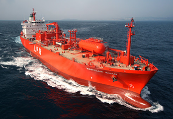
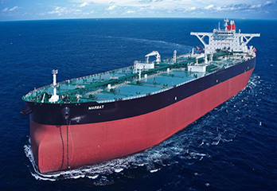
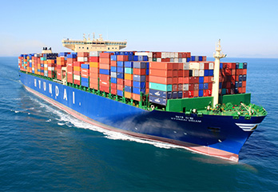
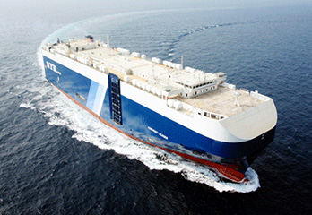
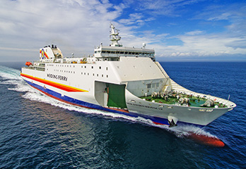

상선/특수선
시장점유율 1위를 유지하게하는
독보적인 건조기술
-

가스선
LNG 운반선(LNG Carrier)은 천연가스를 압축/액화시켜 수송하는 용도의 선박입니다.
대우조선해양이 독자적으로 개발한 LNG연료시스템 (FGSS)과 ‘천연가스 재액화 장치(PRS)’ 등
LNG관련 기술 우위를 바탕으로 세계 최고 경쟁력을 보유하고 있습니다. -

유조선
대우조선해양은 세계에서 운항중인 초대형 유조선 건조 척수 기준으로 세계 1위(점유율 약 18%)
유지하고 있으며, 수주잔량 기준으로도 세계 1위를 기록하고 있습니다.(‘18년 1월 기준)
원유운반선, 셔틀탱커, 정유운반선, 화학제품운반선 등 각종 유조선을 건조하였으며,
이를 통해 독보적인 유조선 건조기술을 보유하고 있습니다. -

컨테이너선
당사는 20피트 컨테이너 23,000개를 11단까지 적재/운항이 가능한 초대형 컨테이너선 건조기술을
보유하고 있으며, 선박 대형화 등 시장 Trend를 선도하고 있습니다.
뿐만 아니라, 세계 최초로 LNG 연료 컨테이너선(Tote Maritime)에 당사 Design을 적용하는 등
친환경 요구에 한 발 앞서 나가고 있습니다. -

자동차운반선
변형을 최소화하는 얇은 철판 용접기법과 좁은 공간에 최대의 차량을 싣는
내부설계로 최대의 적재효율을 자랑합니다.
자체 설계한 38,300DWT급 다목적 자동차운반선은 차량은 물론 탱크, 헬기까지 운송할 수 있는
새로운 개념의 자동차운반선 입니다. -

여객선
대우조선해양은 40노트급 초고속카페리, 472인승 트레저 아일랜드호, 1천5백명의 승객과
자동차 200대를 운송하는 그리스 블루스타 카페리, 이탈리아 모비라인사의 1,880인승 카페리를
차례로 건조, 선진 여객선 건조기술을 습득 했습니다. 2010년 튀니지 선사로부터
1척의 패신저 페리를 수주하여 여객선 기술을 이어 나가고 있습니다.